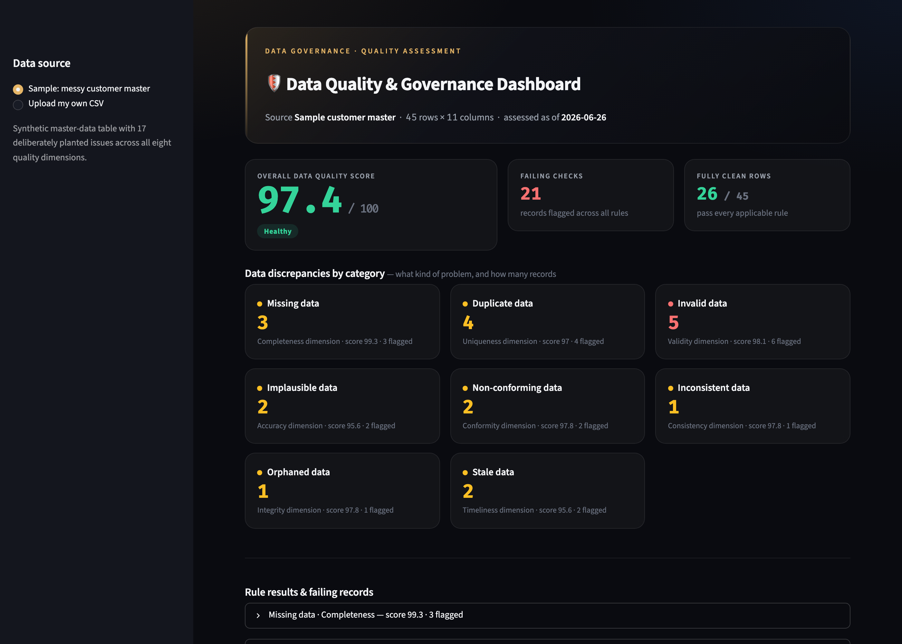
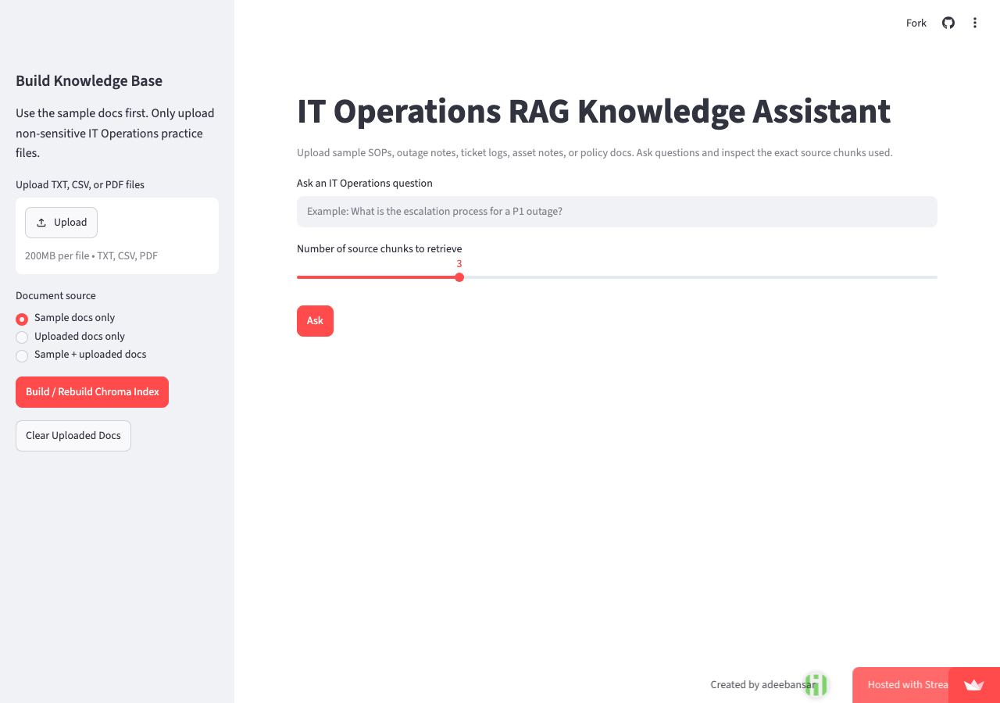
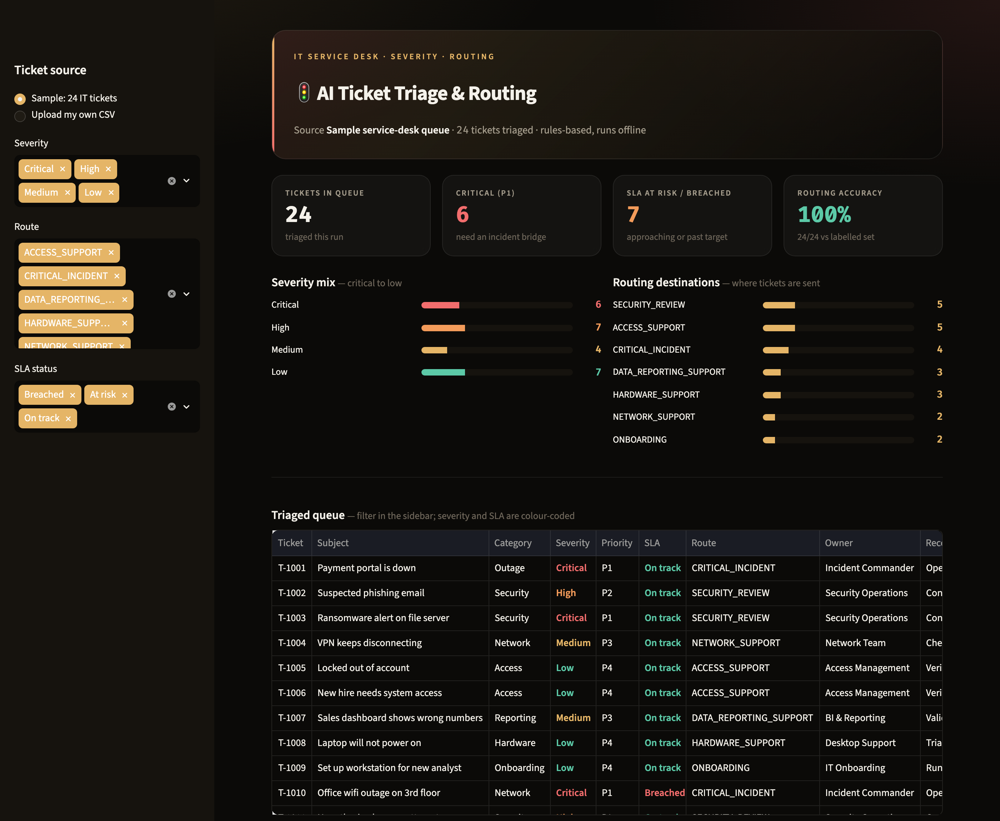

10+ years running IT operations, business process, and data governance — including data-governance and SOP work at Novartis — now building AI and data-quality tools in Python. I turn messy operational data into governed, trustworthy systems.
Each one is deployed and open-source — built to prove the work, not just describe it. Click through and try them.

Scores any dataset across the eight standard data-quality dimensions, then runs an AI-governance data-risk assessment — PII exposure, representation/bias, AI-readiness — mapped to the NIST AI RMF and EU AI Act.

Answers natural-language questions over SOPs, runbooks, and policies using semantic embeddings — with transparent source retrieval, so every answer is grounded in cited documents.

Triages IT service-desk tickets for severity, priority, SLA risk, and the queue to route to — with the owning team and a recommended next action. Validated 24/24 against a labelled gold set.
I spent a decade making operations work — leading 70+ person teams, standardizing SOPs, and building the KPI dashboards that leaders actually trust. At Novartis, I ran data governance and data-quality work in portfolio strategy and implementation.
Now I build the AI side myself: RAG assistants, agent workflows, and data-quality engines in Python. The combination is rare — someone who understands governance and process and ships AI that's measurable, auditable, and trustworthy.
I hold an MS in Computer Science and I'm focused on data governance, data quality, and AI governance roles.